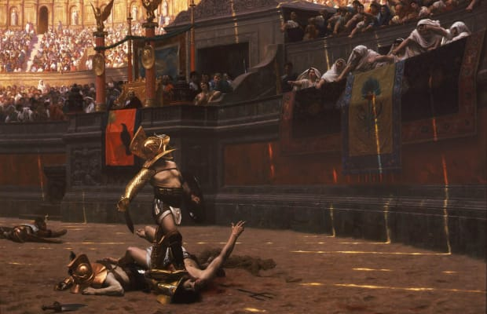
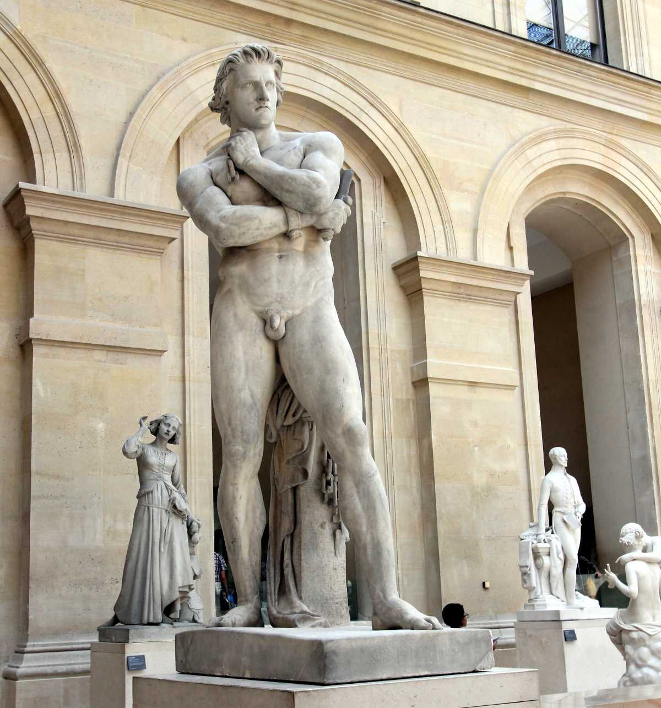

Skylmingarþrælar
Rómverjar voru með margar leiðir til þess að skemmta fólkinu sínu. Eitt af því skemmtilegasta sem Rómverjar gerðu til þess að stytta sér stundir var að horfa á skylmingaþræla berjast upp á líf og dauða í risastóra hringleikahúsinu í miðju Rómaborgar. Skylmingaþrælarnir voru oftast þrælar sem höfðu verið dæmdir fyrir glæpi og látnir berjast þar en einnig voru margir frjálsir menn sem skráðu sig til leiks fyrir frægð og fjársjóð. Skylmingaþrælarnir börðust oft við hvorn annan en einnig voru þeir stundum látnir berjast við hættuleg rándýr eins og ljón og krókódíla upp á skemmtunina.
Skylmingaþrælarnir urðu oft frægir fyrir dáð sín og til eru margar sögur af hæfileikaríkum skylmingaþrælum sem urðu dáðir af samfélaginu. En flestir skylmingaþrælarnir voru ekki viljugir skylmingaþrælar og það kom fyrir að þeir reyndu að sleppa.

Einn frægasti rómverski skylmingaþræll allra tíma er skylmingaþrællinn Spartacus. Spartacus var þrakískur hermaður sem rómverjar handsömuðu og seldu sem þræll. Eigandi Spartacusar sá fljótt að Spartacus var góður bardagamaður og senti hann í skylmingaþræla þjálfun til þess að reyna að græða á honum sem skylmingaþræl. Spartacus leiddi þaðan 70 manna uppreisn þar sem þrælarnir sluppu og fóru í áttina að vesúvíus fjallinu. Á leiðinni frelsuðu þeir marga fleiri þræla og náðu að verjast gegn rúmlega 6 árásum frá rómverskum hermönnum alveg þangað til að herforinginn Marcus Licinius Crassus leiddi 50,000 manna árás á lið Spartacusar þar sem þeir náðu loksins að stoppa hann. Þannig varð Spartacus einn frægasti skylmingaþræll Rómaveldis.